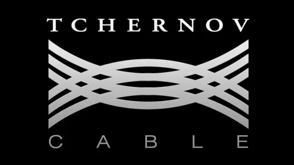
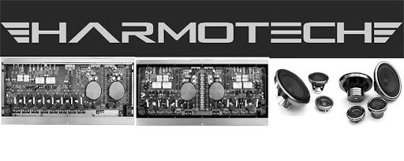
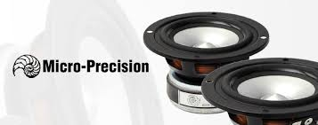
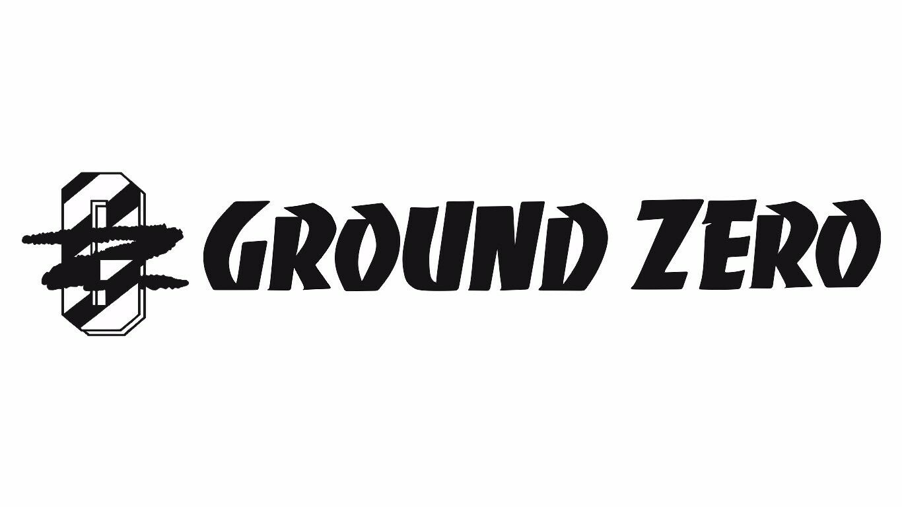
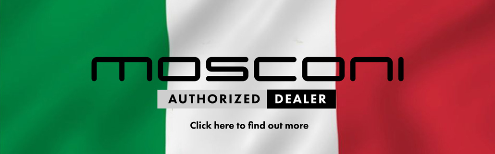

Car Audio Brands!
The World's Top High-end Brand For Car Audio Systems
- TCHERNOV CABLE 
- Harmotech 
- Brax Matrix
- Micro-Precision 
- ZR Speaker Lab
- Ground Zero 
- Scanspeak
- Focal
- Mosconi 
The above brands are all suitable for car sq system, of course almost all of them can be used for spl system, but because the equipment used for sq is more expensive than most SQL, so few people use sq system for spl system, in addition to spl system It is not suitable for sq system, because the sound pressure level that spl mainly pursues does not require high sound quality, so if the equipment of the spl system is placed on the sq system, the effect will be very poor. The following table will recommend equipment suitable for sq and spl systems respectively.
| SQ SYSTEM | SPL SYSTEM |
|---|---|
|
|